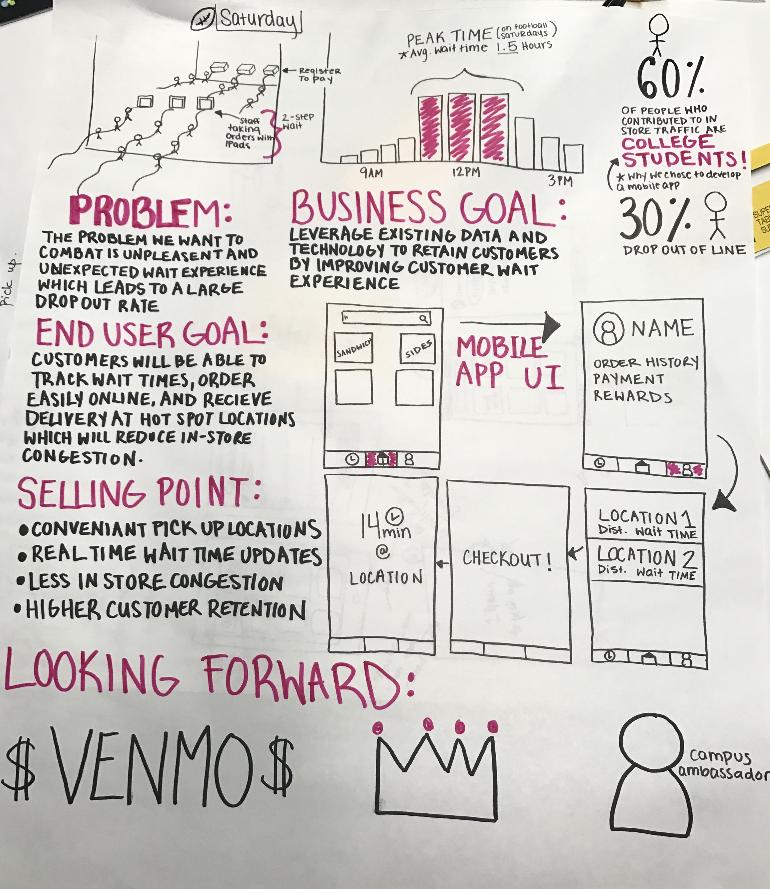
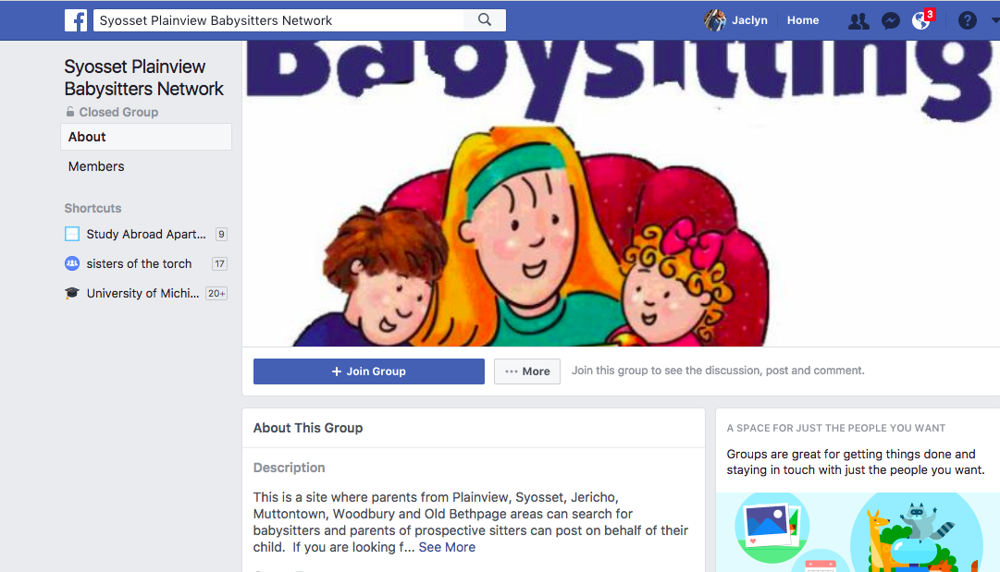
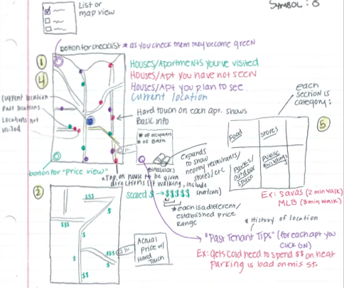
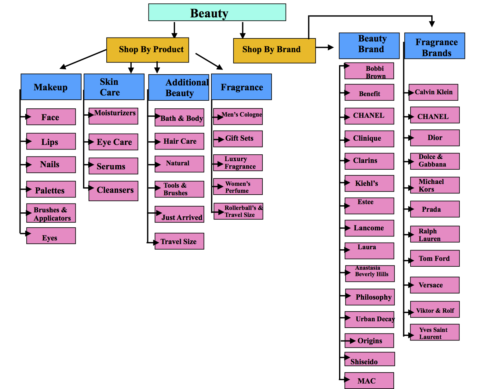

Attended Deloitte Consulting Studio Jam to experience how the InsightStudio team operates at Deloitte. Worked in a team of 5, and tasked with coming up with a plan to solve a critical problem at Zingerman’s Delicatessen. My team came up with the idea of creating an application to combat unpleasant and unexpected wait time for customers on a Football Saturday at the University of Michigan. I hand wrote the prototype as a deliverable and brainstormed ideas for the rewards system. Additionally, my team presented our idea to representatives from the InsightStudio.
The basis of my project is to access a Facebook group called “Syosset Plaineview Babysiters Network,” and get a list of all the members of the group, which are essentially all babysitters in that area looking for jobs. This group is a closed group, however I had the access token, since I am a member. Since everyone using my program cannot necessarily access this group, I created a script file ‘script.py’ and got the data from the Facebook group onto a text file ‘memberlist.txt’, through using this script. Then my program checks to see if each member has a Twitter profile, and if they do, it evaluates their profiles based on “score” to see if they have recently Tweeted “bad” or negative things. The purpose of this program is to evaluate if the potential babysitter is a good candidate to watch children. However, it can be used with any list of names/ people to evaluate their “character” or presence on Twitter.
Worked as a member of a team project to create a prototype for a mobile application that would facilitate the process of house hunting on a college campus. My role in the team included brainstorming ideas as well as drawing the images and writing content on the deliverable.
Tasked with researching the percentage of people below the poverty line in each NYC zip code. Established a poverty threshold for each zip code of anything above 25%, and consequently ran A/B tests in 27 out of the 67 NYC zip codes in order to improve the significance of results. Ran A/B tests on these Link kiosks, displaying creatives with varying text and images. Analyzed results using a heat map of Aunt Bertha searches on the Link tablets in order to gain insight to which version of the creative was most effective

The Beauty section of the Macy’s website is divided into seven subcategories: Makeup, Skin Care, Beauty Brands, Additional Beauty, Impulse Brands, Fragrance, and Fragrance Brands. Through my own experience, I found that the subcategories are not organized in a way that is easy to navigate through when looking for specific beauty products. I conducted a closed card sort on seven participants in order to further evaluate the efficiency of the existing categories. Based on my findings, I created a sitemap to exemplify my recommendation for a new method of categorizing based on my findings.
